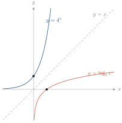
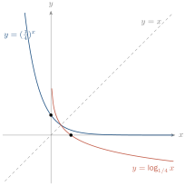
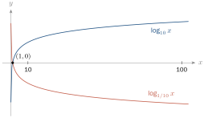
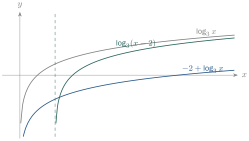
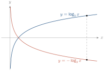
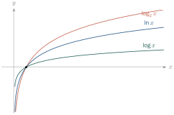

- សង់ក្រាបនៃអនុគមន៍លោការីត
- ដោះស្រាយសមីការនិងវិសមីការលោការីត ។
1. ក្រាបនៃអនុគមន៍លោការីត
ឧទាហរណ៍ ក. សង់ក្រាបនៃ \(\displaystyle y = 4^x\), \(\displaystyle y = \log_4 x\) និងបន្ទាត់ \(\displaystyle y = x\) ។
| \(\displaystyle x\) | \(\displaystyle -2\) | \(\displaystyle -1\) | \(\displaystyle 0\) | \(\displaystyle 1\) | \(\displaystyle 2\) |
| \(\displaystyle y = 4^x\) | \(\displaystyle \frac{1}{16}\) | \(\displaystyle 0.25\) | \(\displaystyle 1\) | \(\displaystyle 4\) | \(\displaystyle 16\) |
| \(\displaystyle x\) | \(\displaystyle 0.25\) | \(\displaystyle 0.5\) | \(\displaystyle 1\) | \(\displaystyle 2\) | \(\displaystyle 4\) |
| \(\displaystyle y = \log_4 x\) | \(\displaystyle -1\) | \(\displaystyle -0.5\) | \(\displaystyle 0\) | \(\displaystyle 0.5\) | \(\displaystyle 1\) |

- \(\displaystyle x\) កើន នោះ \(\displaystyle y = \log_4 x\) កើន ។
- ក្រាបនៃ \(\displaystyle y = \log_4 x\) កាត់អ័ក្ស \(\displaystyle (Ox)\) ត្រង់ \(\displaystyle (1, 0)\) ជានិច្ច ។
- ក្រាបនៃ \(\displaystyle y = \log_4 x\) និង \(\displaystyle y = 4^x\) ឆ្លុះគ្នាធៀបនឹងបន្ទាត់ \(\displaystyle y = x\) ។
ឧទាហរណ៍ ខ. សង់ក្រាបនៃ \(\displaystyle y = \left(\dfrac14\right)^x\), \(\displaystyle y = \log_{1/4} x\) និង \(\displaystyle y = x\) ។
| \(\displaystyle x\) | \(\displaystyle 0.25\) | \(\displaystyle 0.5\) | \(\displaystyle 1\) | \(\displaystyle 2\) | \(\displaystyle 4\) |
| \(\displaystyle y = \log_{1/4} x\) | \(\displaystyle 1\) | \(\displaystyle 0.5\) | \(\displaystyle 0\) | \(\displaystyle -0.5\) | \(\displaystyle -1\) |

ពេលនេះ \(\displaystyle x\) កើន នោះ \(\displaystyle y = \log_{1/4} x\) ចុះ ។
ជាសន្និដ្ឋាន អនុគមន៍ \(\displaystyle y = \log_a x\) (\(\displaystyle a > 0\), \(\displaystyle a \ne 1\)) មានលក្ខណៈ ៖
- បើ \(\displaystyle a > 1\) ក្រាបកើន (អនុគមន៍កើន) បើ \(\displaystyle 0 < a < 1\) ក្រាបចុះ (អនុគមន៍ចុះ)
- ក្រាបកាត់តាមចំណុច \(\displaystyle (1, 0)\) ជានិច្ច
- ដែនកំណត់ \(\displaystyle x > 0\)
- \(\displaystyle y = \log_a x\) និង \(\displaystyle y = a^x\) ជាអនុគមន៍ច្រាសគ្នា ហើយក្រាបឆ្លុះគ្នាធៀបនឹងបន្ទាត់ \(\displaystyle y = x\) ។
សង់ក្រាប ក. \(\displaystyle y = \log_{10} x\) ខ. \(\displaystyle y = \log_{1/10} x\) ។
| \(\displaystyle x\) | \(\displaystyle \frac1{100}\) | \(\displaystyle \frac1{10}\) | \(\displaystyle 1\) | \(\displaystyle 10\) | \(\displaystyle 100\) |
| \(\displaystyle y = \log_{10} x\) | \(\displaystyle -2\) | \(\displaystyle -1\) | \(\displaystyle 0\) | \(\displaystyle 1\) | \(\displaystyle 2\) |
| \(\displaystyle y = \log_{1/10} x\) | \(\displaystyle 2\) | \(\displaystyle 1\) | \(\displaystyle 0\) | \(\displaystyle -1\) | \(\displaystyle -2\) |

សង់ក្រាប ក. \(\displaystyle y = \log_7 x\) ខ. \(\displaystyle y = \log_{1/7} x\) ។
2. ការរំកិល និងការឆ្លុះក្រាបលោការីត
ឧទាហរណ៍ : សង់ក្រាប ក. \(\displaystyle y = -2 + \log_3 x\) ខ. \(\displaystyle y = \log_3(x-2)\) គ. \(\displaystyle y = -\log_3 x\) ។
| \(\displaystyle x\) | \(\displaystyle \frac13\) | \(\displaystyle 1\) | \(\displaystyle 3\) | \(\displaystyle 9\) |
| \(\displaystyle \log_3 x\) | \(\displaystyle -1\) | \(\displaystyle 0\) | \(\displaystyle 1\) | \(\displaystyle 2\) |
| \(\displaystyle -2 + \log_3 x\) | \(\displaystyle -3\) | \(\displaystyle -2\) | \(\displaystyle -1\) | \(\displaystyle 0\) |
| \(\displaystyle x\) | \(\displaystyle \frac73\) | \(\displaystyle 3\) | \(\displaystyle 5\) | \(\displaystyle 11\) |
| \(\displaystyle \log_3(x-2)\) | \(\displaystyle -1\) | \(\displaystyle 0\) | \(\displaystyle 1\) | \(\displaystyle 2\) |


- \(\displaystyle y = \log_a x + q\) ៖ រំកិលស្របអ័ក្ស \(\displaystyle (Oy)\) ចំនួន \(\displaystyle |q|\) ឯកតា ឡើងលើបើ \(\displaystyle q > 0\) ចុះក្រោមបើ \(\displaystyle q < 0\) ។
- \(\displaystyle y = \log_a(x - p)\) ៖ រំកិលស្របអ័ក្ស \(\displaystyle (Ox)\) ចំនួន \(\displaystyle |p|\) ឯកតា ទៅស្តាំបើ \(\displaystyle p > 0\) ទៅឆ្វេងបើ \(\displaystyle p < 0\) ។
- \(\displaystyle y = -\log_a x\) ៖ ឆ្លុះក្រាប \(\displaystyle y = \log_a x\) ធៀបនឹងអ័ក្ស \(\displaystyle (Ox)\) ។
សង់ក្រាប ក. \(\displaystyle y = \log_7(x+3)\) ខ. \(\displaystyle y = \log_7 x + 3\) គ. \(\displaystyle y = -\log_7 x\) ឃ. \(\displaystyle y = \log_2(x-1)^2\) ង. \(\displaystyle y = 2 - \log_2 x^2\) ។
3. រូបមន្តប្តូរគោល
បើ \(\displaystyle a, b, x > 0\) ហើយ \(\displaystyle a \ne 1\), \(\displaystyle b \ne 1\) នោះ
សម្រាយបញ្ជាក់ តាង \(\displaystyle M = \log_a x\) នោះ \(\displaystyle a^M = x\) ។ យក \(\displaystyle \log_b\) ទាំងពីរអង្គ ៖ \(\displaystyle M \log_b a = \log_b x\) នាំឱ្យ \(\displaystyle M = \dfrac{\log_b x}{\log_b a}\) ។
គណនា ក. \(\displaystyle \log_9 27\) ខ. \(\displaystyle \log_{27}\dfrac13\) គ. \(\displaystyle \log_7 27\) ឃ. \(\displaystyle \log_5 125\) ។
- ក. \(\displaystyle \log_9 27 = \dfrac{\log_3 27}{\log_3 9} = \dfrac32\)
- ខ. \(\displaystyle \log_{27}\dfrac13 = \log_{3^3} 3^{-1} = -\dfrac13\)
- គ. \(\displaystyle \log_7 27 = \dfrac{\log_{10} 27}{\log_{10} 7} \approx 1.6937\)
- ឃ. \(\displaystyle \log_5 125 = \log_5 5^3 = 3\)
គណនា ក. \(\displaystyle \log_5 625\) ខ. \(\displaystyle \log_5 346\) គ. \(\displaystyle \log_6 4870\) ។
មើលចម្លើយ
ក. \(\displaystyle 4\) ខ. \(\displaystyle 3.63\) គ. \(\displaystyle 4.74\) ។
4. សមីការនិងវិសមីការលោការីត
4.1. សមីការលោការីត
ឧទាហរណ៍ 1 : \(\displaystyle \log_4 x = \log_4 7\) មានន័យពេល \(\displaystyle x > 0\) នោះ \(\displaystyle x = 7\) ។
ឧទាហរណ៍ 2 : \(\displaystyle \log_4 x = \dfrac52\) ។ គេបាន \(\displaystyle x = 4^{5/2} = (2^2)^{5/2} = 2^5 = 32\) ។
ឧទាហរណ៍ 3 : ដោះស្រាយ \(\displaystyle 6(\log_x 8 + \log_8 x) = 13\) ដែល \(\displaystyle x > 0\), \(\displaystyle x \ne 1\) ។ ដោយ \(\displaystyle \log_x 8 = \dfrac{1}{\log_8 x}\) តាង \(\displaystyle t = \log_8 x\) ៖
ឧទាហរណ៍ 4 : ដោះស្រាយ \(\displaystyle \log_9 x + \log_x 9 = \dfrac52\) ដែល \(\displaystyle x > 0\), \(\displaystyle x \ne 1\) ។ តាង \(\displaystyle t = \log_9 x\) ៖ \(\displaystyle 2t^2 - 5t + 2 = 0\) នាំឱ្យ \(\displaystyle t = \dfrac12\) ឬ \(\displaystyle t = 2\) ដូច្នេះ \(\displaystyle x = 3\) ឬ \(\displaystyle x = 81\) ។
ដោះស្រាយ ក. \(\displaystyle \log_9 x = \dfrac32\) ខ. \(\displaystyle \log_{1/10} x = -3\) គ. \(\displaystyle \log_x 9 = 2\) ។
មើលចម្លើយ
ក. \(\displaystyle x = 27\) ខ. \(\displaystyle x = 1000\) គ. \(\displaystyle x = 3\) ។
4.2. វិសមីការលោការីត
ឧទាហរណ៍ : ក. \(\displaystyle \log_3 x > \log_3 7\) នោះ \(\displaystyle x > 7\) (គោល \(\displaystyle 3 > 1\)) ។ ខ. \(\displaystyle \log_{1/2} x > \log_{1/2} 7\) នោះ \(\displaystyle 0 < x < 7\) (គោល \(\displaystyle \frac12 < 1\)) ។
- បើ \(\displaystyle a > 1\) នោះ \(\displaystyle \log_a x > \log_a y \iff x > y > 0\) ។
- បើ \(\displaystyle 0 < a < 1\) នោះ \(\displaystyle \log_a x > \log_a y \iff 0 < x < y\) (ប្តូរទិសវិសមភាព) ។
ដោះស្រាយ ក. \(\displaystyle \log_3(3x-5) > \log_3(x+7)\) ខ. \(\displaystyle \log_{1/2}(2x-1) \le 2\) ។
- ក. \(\displaystyle 3x - 5 > x + 7\) នាំឱ្យ \(\displaystyle x > 6\) ។ ពិនិត្យ ៖ \(\displaystyle 3x - 5 > 0\) ពិត ។ ចម្លើយ \(\displaystyle x \in (6, +\infty)\) ។
- ខ. \(\displaystyle 2 = \log_{1/2}\left(\frac12\right)^2\) ។ ដោយគោល \(\displaystyle < 1\) គេបាន \(\displaystyle 2x - 1 \ge \frac14\) នាំឱ្យ \(\displaystyle x \ge \frac58\) ។ ពិនិត្យ ៖ \(\displaystyle 2x - 1 > 0\) ពិត ។ ចម្លើយ \(\displaystyle x \in \left[\frac58, +\infty\right)\) ។
ដោះស្រាយ ក. \(\displaystyle \log_5(x^2-6) > \log_5 x\) ខ. \(\displaystyle \log_{1/3} x < 0\) គ. \(\displaystyle \log_x 27 \ge 3\) ។
មើលចម្លើយ
ក. \(\displaystyle x > 3\) ខ. \(\displaystyle x > 1\) គ. \(\displaystyle 1 < x \le 3\) ។
5. លោការីតគោល 10 និងលោការីតនេពែ
5.1. លោការីតគោល 10
ពី \(\displaystyle y = 10^x\) គេបាន \(\displaystyle x = \log_{10} y\) ហៅថាលោការីតគោល \(\displaystyle 10\) សរសេរ \(\displaystyle \log x\) ។
រក \(\displaystyle x\) ៖ ក. \(\displaystyle 10^{2x-3} = 7\) ខ. \(\displaystyle 6^{x+2} = 21\) ។
- ក. \(\displaystyle 2x - 3 = \log 7\) នាំឱ្យ \(\displaystyle x = \dfrac{\log 7 + 3}{2}\)
- ខ. \(\displaystyle x + 2 = \log_6 21\) នាំឱ្យ \(\displaystyle x = \dfrac{\log 21}{\log 6} - 2\)
ដោះស្រាយ ក. \(\displaystyle \log(40 + y^2) = 2.5\) ខ. \(\displaystyle \log(y+18) + \log 5 - \log(2y-3) = 2\) ។
មើលចម្លើយ
ក. \(\displaystyle y = \pm 16.6\) ខ. \(\displaystyle y = 2\) ។
5.2. លោការីតនេពែ
ចំនួន \(\displaystyle e \approx 2.71828\ldots\) ។ ពី \(\displaystyle y = e^x\) គេបាន \(\displaystyle x = \log_e y\) ហៅថាលោការីតនេពែ សរសេរ \(\displaystyle \ln x\) ។
រក \(\displaystyle x\) ៖ ក. \(\displaystyle e^{x-2} = 12\) ខ. \(\displaystyle 4e^{2x} + 2 = 18\) ។
- ក. \(\displaystyle x - 2 = \ln 12\) នាំឱ្យ \(\displaystyle x = \ln 12 + 2\)
- ខ. \(\displaystyle e^{2x} = 4\) នាំឱ្យ \(\displaystyle x = \dfrac{\ln 4}{2} = \ln 2\)
ដោះស្រាយ ក. \(\displaystyle e^{5x+2} = 23\) ខ. \(\displaystyle e^x(2e^x - 1) = 10\) ។
មើលចម្លើយ
ក. \(\displaystyle x = 0.227\) ខ. \(\displaystyle x = 0.916\) ។
5.3. ក្រាបនៃ log និង ln
\(\displaystyle y = \log_{10} x \iff 10^y = x\) និង \(\displaystyle y = \ln x \iff e^y = x\) ។

គោលកាន់តែធំ (ចំពោះ \(\displaystyle a > 1\)) នោះអនុគមន៍លោការីតកាន់តែកើនយឺត ។
6. ការអនុវត្តលើអនុគមន៍លោការីត
6.1. តម្លៃកើនតាមឆ្នាំ
ឧទាហរណ៍ : ដាក់ \(\displaystyle 2\,925\,000\) ៛ ការប្រាក់ \(\displaystyle 10\%\) ក្នុងមួយឆ្នាំ ទូទាត់មួយឆមាសម្តង ។ តើប៉ុន្មានឆ្នាំ ប្រាក់កើនដល់ \(\displaystyle 3\,705\,000\) ៛ ?
ប្រើ \(\displaystyle A = P\left(1 + \dfrac rn\right)^{nt}\) ដែល \(\displaystyle n = 2\) ៖
6.2. តម្លៃថយតាមឆ្នាំ
ឧទាហរណ៍ : រថយន្តថ្មី \(\displaystyle 20\,000\) ដុល្លារ ចុះថ្លៃ \(\displaystyle 15\%\) ក្នុងមួយឆ្នាំ ។ តម្លៃក្រោយ \(\displaystyle 1, 2, 3, 4\) ឆ្នាំ គឺ \(\displaystyle 17\,000\); \(\displaystyle 14\,450\); \(\displaystyle 12\,282.5\); \(\displaystyle 10\,440.13\) ដុល្លារ ។ ប្រើរូបមន្ត \(\displaystyle y = a(1-r)^t\) ។
ស្ករ \(\displaystyle 130\) មីលីក្រាមរលាយក្នុងរាងកាយអត្រា \(\displaystyle 11\%\) ក្នុងមួយម៉ោង ។ តើប៉ុន្មានម៉ោងរលាយអស់ពាក់កណ្តាល ?
\(\displaystyle 65 = 130(0.89)^t\) នាំឱ្យ \(\displaystyle t = \dfrac{\log 0.5}{\log 0.89} \approx 5.948\) ដូច្នេះប្រហែល \(\displaystyle 6\) ម៉ោង ។
- ក. ដាក់ \(\displaystyle 2\,000\,000\) ៛ ការប្រាក់ \(\displaystyle 6\%\) ក្នុងមួយឆ្នាំ ។ តើប៉ុន្មានឆ្នាំប្រាក់កើនពីរដង ?
- ខ. កុំព្យូទ័រ \(\displaystyle 3\,000\) ដុល្លារ រំលស់ \(\displaystyle 20\%\) ក្នុងមួយឆ្នាំ ។ រកតម្លៃក្រោយ \(\displaystyle 3\) ឆ្នាំ ។
- គ. ចិនឆ្នាំ \(\displaystyle 2000\) មាន \(\displaystyle 1.26\) ពាន់លាននាក់ ឥណ្ឌា \(\displaystyle 1.01\) ពាន់លាននាក់ ។ \(\displaystyle I(t) = 1.01e^{0.015t}\) និង \(\displaystyle C(t) = 1.26e^{0.009t}\) ។ ឆ្នាំណាឥណ្ឌាមានប្រជាជនច្រើនជាងចិន ?
មើលចម្លើយ
- ក. \(\displaystyle t = \dfrac{\ln 2}{\ln 1.06} \approx 11.90\) ឆ្នាំ
- ខ. \(\displaystyle 3\,000(0.8)^3 = 1\,536\) ដុល្លារ
- គ. \(\displaystyle t > \dfrac{\ln(1.26/1.01)}{0.006} \approx 36.9\) ដូច្នេះឆ្នាំ \(\displaystyle 2037\)
លំហាត់
- រកអនុគមន៍ច្រាស ៖ ក. \(\displaystyle y = 4x - 3\) ខ. \(\displaystyle y = 3x^2 + 1\) គ. \(\displaystyle x^2 - 3y^2 = 3\) ឃ. \(\displaystyle xy = -6\) ង. \(\displaystyle xy^2 = 1\) ច. \(\displaystyle \frac{x^2}{9} + \frac{y^2}{4} = 1\) ឆ. \(\displaystyle y = \frac5x\) ជ. \(\displaystyle y = \sqrt{x-2}\)
- \(\displaystyle f(x) = x - 2\) ។ រក \(\displaystyle f^{-1}(x)\) រួចសង់ក្រាប ។
- សង់ក្រាប ក. \(\displaystyle \log_5 x\) ខ. \(\displaystyle \log_7 x\) គ. \(\displaystyle \log_{10} x\) ឃ. \(\displaystyle \log_{1.5} x\) ង. \(\displaystyle \log_{0.5} x\) ច. \(\displaystyle \log_{0.3} x\)
- បំប្លែងជាទម្រង់លោការីត ៖ ក. \(\displaystyle 10^4 = 10000\) ខ. \(\displaystyle 8^{1/3} = 2\) គ. \(\displaystyle 16^{1/4} = 2\) ឃ. \(\displaystyle 5^{-2} = \frac1{25}\) ង. \(\displaystyle 4^{-3} = \frac1{64}\) ច. \(\displaystyle 10^{0.3010} = 2\) ឆ. \(\displaystyle x^{-a} = y\) ជ. \(\displaystyle A = k^c\)
- សម្រួល ៖ ក. \(\displaystyle 3^{\log_3 2}\) ខ. \(\displaystyle 5^{\log_5 10}\) គ. \(\displaystyle \log_a a^{10}\) ឃ. \(\displaystyle \log_q q^a\) ង. \(\displaystyle \log_4 64\) ច. \(\displaystyle \log_{10} 0.1\) ឆ. \(\displaystyle \log_{\sqrt2} 16\) ជ. \(\displaystyle \log_{10} 1\)
- ដោះស្រាយ ៖ ក. \(\displaystyle \log_3 x = 3\) ខ. \(\displaystyle \log_x 16 = 2\) គ. \(\displaystyle \log x + \log(x+9) = 1\) ឃ. \(\displaystyle \log_2 x = -1\) ង. \(\displaystyle \log_9 x = \frac12\) ច. \(\displaystyle \log_8 x = \frac13\) ឆ. \(\displaystyle \log\sqrt[3]{x} = \sqrt{\log x}\) ជ. \(\displaystyle \log_5\sqrt{x^2+1} = 1\) ឈ. \(\displaystyle \log_4(x+3) + \log_4(x-3) = 2\) ញ. \(\displaystyle \log\sqrt[3]{x^2} + \log\sqrt[3]{x^4} = \log 2^{-3}\)
- ដោះស្រាយវិសមីការ ៖ ក. \(\displaystyle \log_2 2x \le \log_4(x+3)\) ខ. \(\displaystyle \log_3(3x-5) \ge \log_3(x+7)\) គ. \(\displaystyle \log\frac{x^2-x}{x^2-1} < 0\) ឃ. \(\displaystyle \log_{0.5}x^2 < \log_{0.5}3x\) ង. \(\displaystyle \log_5 12 < \log_5(5x-3)\) ច. \(\displaystyle \log(x^2-2x+3) \ge 0\) ឆ. \(\displaystyle \log_8(3x-1) < \log_8(x+5)\)
- ដាក់ \(\displaystyle 4\,000\,000\) ៛ ការប្រាក់ \(\displaystyle 6\%\) ក្នុងមួយឆ្នាំ ។ ប៉ុន្មានឆ្នាំប្រាក់កើនពីរដង ?
- រថយន្ត \(\displaystyle 38\,500\) ដុល្លារ ចុះថ្លៃ \(\displaystyle 15\%\) ក្នុងមួយឆ្នាំ ។ តម្លៃក្រោយ \(\displaystyle 7\) ឆ្នាំ ?
- សរសេរអនុគមន៍ច្រាស ៖ ក. \(\displaystyle 10^x\) ខ. \(\displaystyle 3^x\) គ. \(\displaystyle 7^x\) ឃ. \(\displaystyle \left(\frac12\right)^x\) ង. \(\displaystyle \left(\frac15\right)^x\) ច. \(\displaystyle \left(\frac1{10}\right)^x\)
- សរសេរអនុគមន៍ច្រាស ៖ ក. \(\displaystyle \log x\) ខ. \(\displaystyle \log_3 x\) គ. \(\displaystyle \log_5 x\) ឃ. \(\displaystyle \log_{1/3}x\) ង. \(\displaystyle \log_{5/4}x\) ច. \(\displaystyle \log_{21}x\)
- ក. សង់ក្រាប \(\displaystyle f(x) = 5^x\) ខ. សង់ក្រាបអនុគមន៍ច្រាសក្នុងតម្រុយតែមួយ គ. សរសេរសមីការអនុគមន៍ច្រាស ។
- សង់ក្រាប ក. \(\displaystyle \log_6 x\) ខ. \(\displaystyle \log_{1/6}x\) គ. \(\displaystyle \log_{0.8}x\)
- បង្ហាញថា បើ \(\displaystyle f(x) = \log_a x\) នោះ \(\displaystyle f(xy) = f(x) + f(y)\) ។
- ក. បើ \(\displaystyle (x_1,y_1)\), \(\displaystyle (x_2,y_2)\) នៅលើ \(\displaystyle y = \log_a x\) នោះ \(\displaystyle \left(\frac{x_1}{x_2},\,y_1-y_2\right)\) ក៏នៅលើក្រាប ។ ខ. បើ \(\displaystyle (x_1,y_1)\) នៅលើក្រាប នោះ \(\displaystyle (x_1^2,\,2y_1)\) និង \(\displaystyle \left(\frac1{x_1},\,-y_1\right)\) ក៏នៅលើក្រាប ។
- \(\displaystyle f(x) = a^x\) និង \(\displaystyle f^{-1}(x) = \log_a x\) ។ រក \(\displaystyle a\) ដើម្បីឱ្យក្រាបទាំងពីរកាត់គ្នា ។
- \(\displaystyle f(x) = x - \log_2 x\), \(\displaystyle g(x) = 2^x\) ។ គណនា ក. \(\displaystyle f(g(x))\) ខ. \(\displaystyle g(f(x))\)
- ដោះស្រាយនិងផ្ទៀងផ្ទាត់ ៖ ក. \(\displaystyle \log_2(2x+4) - \log_2(x-1) = 3\) ខ. \(\displaystyle \log_2 x + \log_4 x = 5\) គ. \(\displaystyle \log_5 x + \log_{10}x = 5\) ឃ. \(\displaystyle \log(x+10) + \frac12\log x^2 = 2 - \log 4\)
- រក \(\displaystyle m\) ដើម្បីឱ្យ \(\displaystyle 1 + \log_5(x^2+1) \ge \log_5(mx^2 + 4x + m)\) ពិតគ្រប់ \(\displaystyle x\) ។
- រក \(\displaystyle a\) ដើម្បីឱ្យ \(\displaystyle \log_{\frac1{a+1}}(x^2+2) \ge 1\) ពិតគ្រប់ \(\displaystyle x\) ។
- ក. តាង \(\displaystyle u = 2^x\) បង្ហាញថា \(\displaystyle 8^x - 2^{x+2} = 15\) ជាសមីការដឺក្រេ \(\displaystyle 3\) នៃ \(\displaystyle u\) ខ. បង្ហាញថា \(\displaystyle u = 3\) ជាឫសពិតតែមួយ គ. ដោះស្រាយ \(\displaystyle 8^x - 2^{x+2} = 15\) ។
- តម្លៃម៉ូតូ \(\displaystyle V = 10\,000e^{-pt}\) (\(\displaystyle t\) ជាខែ) ។ ក. បើក្រោយ \(\displaystyle 12\) ខែ \(\displaystyle V = 5\,000\) រកតម្លៃទិញ និង \(\displaystyle p\) ខ. រកតម្លៃក្រោយ \(\displaystyle 18\) ខែ ។
- ក. ដោះស្រាយ \(\displaystyle 3^{2x+1} - 26(3^x) - 9 = 0\) ខ. ដោះស្រាយប្រព័ន្ធ \(\displaystyle \begin{cases}\log p + \log q = 3\\ \log_q p = 2\end{cases}\)
- តម្លៃផ្ទះ \(\displaystyle V = V_0e^{kt}\) ។ ក. រក \(\displaystyle k\) បើក្រោយ \(\displaystyle 8\) ឆ្នាំតម្លៃស្មើពីរដងតម្លៃដើម ខ. រក \(\displaystyle t\) ពេលតម្លៃស្មើបីដងតម្លៃដើម ។
- រក \(\displaystyle p\) និង \(\displaystyle q\) ជាចំនួនគត់រ៉ឺឡាទីវ ដែល \(\displaystyle \left(\frac{25}{16}\right)^{-3/2} = 2^p \times 5^q\) ។
- \(\displaystyle \log_p X = 4.6\), \(\displaystyle \log_p Y = 2.3\) ។ គណនា ក. \(\displaystyle \log_p X^2Y\) ខ. \(\displaystyle \log_Y X\)
- \(\displaystyle 2^{2x+2} \times 5^{x-1} = 8^x \times 5^{2x}\) ។ គណនា \(\displaystyle 10^x\) ។
- \(\displaystyle f(x) = \ln x\) ។ ក. សង់ក្រាប ខ. រកសមីការបន្ទាត់កាត់ក្រាប ដែលអាប់ស៊ីសនៃចំណុចប្រសព្វជាឫសនៃ \(\displaystyle x^2e^{x-2} = 1\) ។
ចម្លើយលំហាត់
- ក. \(\displaystyle y = \frac{x+3}{4}\) ខ. \(\displaystyle y = \pm\sqrt{\frac{x-1}{3}}\) គ. \(\displaystyle y = \pm\sqrt{3x^2+3}\) ឃ. \(\displaystyle y = -\frac6x\) ង. \(\displaystyle y = \frac1{x^2}\) ច. \(\displaystyle y = \pm3\sqrt{1-\frac{x^2}4}\) ឆ. \(\displaystyle y = \frac5x\) ជ. \(\displaystyle y = x^2 + 2\) (\(\displaystyle x \ge 0\))
- \(\displaystyle f^{-1}(x) = x + 2\)
- (ក្រាប)
- ក. \(\displaystyle \log_{10}10000 = 4\) ខ. \(\displaystyle \log_8 2 = \frac13\) គ. \(\displaystyle \log_{16}2 = \frac14\) ឃ. \(\displaystyle \log_5\frac1{25} = -2\) ង. \(\displaystyle \log_4\frac1{64} = -3\) ច. \(\displaystyle \log_{10}2 = 0.3010\) ឆ. \(\displaystyle \log_x y = -a\) ជ. \(\displaystyle \log_k A = c\)
- ក. \(\displaystyle 2\) ខ. \(\displaystyle 10\) គ. \(\displaystyle 10\) ឃ. \(\displaystyle a\) ង. \(\displaystyle 3\) ច. \(\displaystyle -1\) ឆ. \(\displaystyle 8\) ជ. \(\displaystyle 0\)
- ក. \(\displaystyle 27\) ខ. \(\displaystyle 4\) គ. \(\displaystyle 1\) ឃ. \(\displaystyle \frac12\) ង. \(\displaystyle 3\) ច. \(\displaystyle 2\) ឆ. \(\displaystyle x = 1\) ឬ \(\displaystyle 10^9\) ជ. \(\displaystyle \pm2\sqrt6\) ឈ. \(\displaystyle 5\) ញ. \(\displaystyle 2^{-3/2} = \frac1{2\sqrt2}\)
- ក. \(\displaystyle 0 < x \le 1\) ខ. \(\displaystyle x \ge 6\) គ. \(\displaystyle x > 0\), \(\displaystyle x \ne 1\) ឃ. \(\displaystyle x > 3\) ង. \(\displaystyle x > 3\) ច. \(\displaystyle x \in \mathbb{R}\) ឆ. \(\displaystyle \frac13 < x < 3\)
- \(\displaystyle \frac{\ln2}{\ln1.06} \approx 11.90\) ឆ្នាំ
- \(\displaystyle 38\,500(0.85)^7 \approx 12\,342.22\) ដុល្លារ
- ក. \(\displaystyle \log x\) ខ. \(\displaystyle \log_3x\) គ. \(\displaystyle \log_7x\) ឃ. \(\displaystyle \log_{1/2}x\) ង. \(\displaystyle \log_{1/5}x\) ច. \(\displaystyle \log_{1/10}x\)
- ក. \(\displaystyle 10^x\) ខ. \(\displaystyle 3^x\) គ. \(\displaystyle 5^x\) ឃ. \(\displaystyle \left(\frac13\right)^x\) ង. \(\displaystyle \left(\frac54\right)^x\) ច. \(\displaystyle 21^x\)
- (ក្រាប) គ. \(\displaystyle f^{-1}(x) = \log_5x\)
- (ក្រាប)
- \(\displaystyle \log_a(xy) = \log_ax + \log_ay\)
- ក. \(\displaystyle \log_ax_1 - \log_ax_2 = \log_a\frac{x_1}{x_2}\) ខ. \(\displaystyle 2\log_ax_1 = \log_ax_1^2\) និង \(\displaystyle -\log_ax_1 = \log_a\frac1{x_1}\)
- \(\displaystyle 0 < a \le e^{1/e} \approx 1.4447\) (\(\displaystyle a \ne 1\))
- ក. \(\displaystyle 2^x - x\) ខ. \(\displaystyle \frac{2^x}{x}\)
- ក. \(\displaystyle 2\) ខ. \(\displaystyle 2^{10/3} \approx 10.08\) គ. \(\displaystyle \approx 114.04\) ឃ. \(\displaystyle x = -5\) ឬ \(\displaystyle x = 5\sqrt2 - 5\)
- \(\displaystyle 2 < m \le 3\)
- \(\displaystyle -\frac12 \le a < 0\)
- ក. \(\displaystyle u^3 - 4u - 15 = 0\) ខ. \(\displaystyle (u-3)(u^2+3u+5) = 0\) ហើយ \(\displaystyle u^2+3u+5 > 0\) គ. \(\displaystyle x = \log_23\)
- ក. \(\displaystyle \$10\,000\) និង \(\displaystyle p = \frac{\ln2}{12}\) ខ. \(\displaystyle \approx\$3\,535.53\)
- ក. \(\displaystyle x = 2\) ខ. \(\displaystyle p = 100\), \(\displaystyle q = 10\)
- ក. \(\displaystyle k = \frac{\ln2}8 \approx 0.0866\) ខ. \(\displaystyle t = \frac{8\ln3}{\ln2} \approx 12.68\) ឆ្នាំ
- \(\displaystyle p = 6\), \(\displaystyle q = -3\)
- ក. \(\displaystyle 11.5\) ខ. \(\displaystyle 2\)
- \(\displaystyle \frac45\)
- ក. (ក្រាប) ខ. \(\displaystyle y = 1 - \frac x2\)
ខ្លឹមសារ៖ សៀវភៅពុម្ពគណិតវិទ្យាថ្នាក់ទី១១ របស់ក្រសួងអប់រំ យុវជន និងកីឡា · វាយអត្ថបទ គូររូបភាពឡើងវិញ និងរៀបចំលើអនឡាញដោយលោកគ្រូ សាន សុខលី សម្រាប់ការសិក្សាដោយឥតគិតថ្លៃ និងមិនរកប្រាក់ចំណេញ។ មិនមែនជាការបោះពុម្ពផ្លូវការរបស់ក្រសួងទេ។